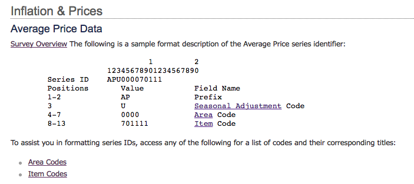

In the FAQ section, there is link to http://www.bls.gov/help/hlpforma.htm . There are various data point that you can pull. However, you will need to drill down to the specific category that you want and follow the format that is specified. For example, let's look at Average Price Data.

I"m going to select Area_Code = 0000 , Area_Name = U.S. city average
I love ice cream, so I'm going to Item_Code = 710411, Item_Name = Ice cream, prepackaged, bulk, regular, per 1/2 gal. (1.9 lit) .
The series ID for Average Price - Ice Cream for U.S. city average is:
APU0000710411
I'm also interested in Cheddar cheese, natural, per lb. (453.6 gm), which is Item_Code = 710212
The series ID for Average Price - Chedder cheese, natural(cost/lb) for U.S. city average is:
APU0000710212